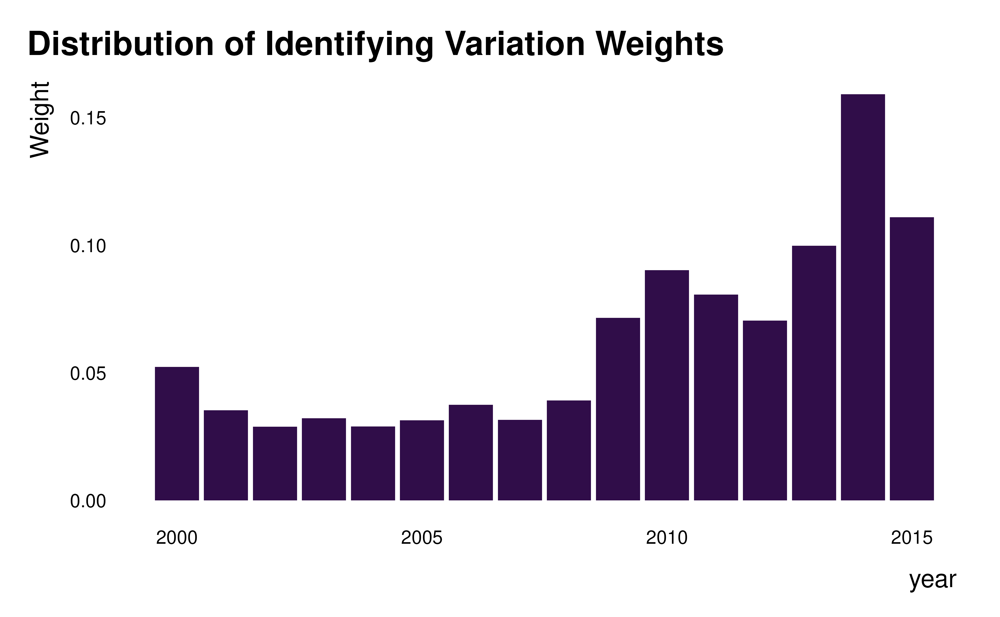

Compute the between-group variances in weights
idid_grouping_var.RdIdentify variables along which groups may contribute heterogeneously to identification.
Arguments
- reg
A regression object.
- var_interest
A string. The name of the main variable of interest.
- grouping_vars
A string vector of variable names or
"everything". The set of variables to group weights by. If"everything"passed, group by each of the variables in the data set successively.- ...
Additional elements to pass to the regression function when partialling out controls.
Value
A dataframe with 2 columns:
grouping_varthe names of grouping varbetween_varthe between-group variation in weights
Details
Identify variables for which grouping by this variable yields the most heterogeneous between-groups differences in weights (i.e. the largest between-groups variance).
Examples
reg_ex <- ggplot2::txhousing |>
lm(formula = log(sales) ~ median + listings + city + as.factor(date))
idid_grouping_var(reg_ex, "median", grouping_vars = c("city", "year", "month"))
#> grouping_var between_var
#> 2 year 0.0014294311
#> 1 city 0.0003418194
#> 3 month 0.0001321872
#We can now then explore the weights along the dimension with the largest
#variance: year
idid_viz_weights(reg_ex, "median", year)
#> Warning: Vectorized input to `element_text()` is not officially supported.
#> ℹ Results may be unexpected or may change in future versions of ggplot2.
